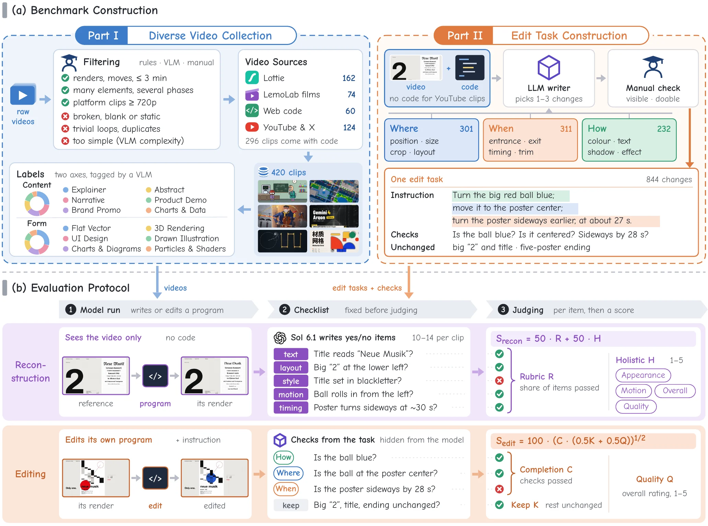
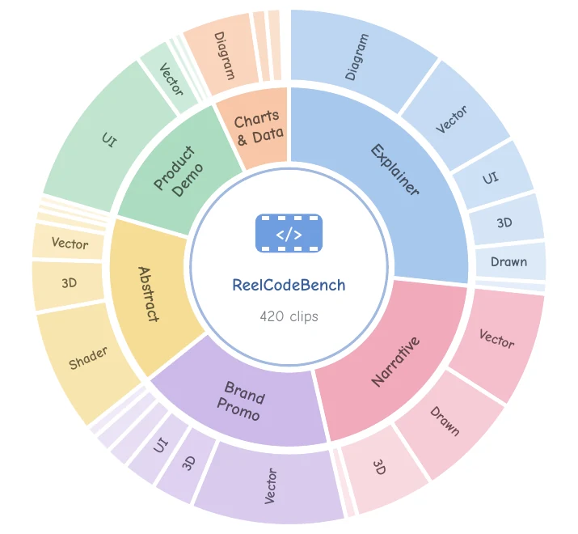
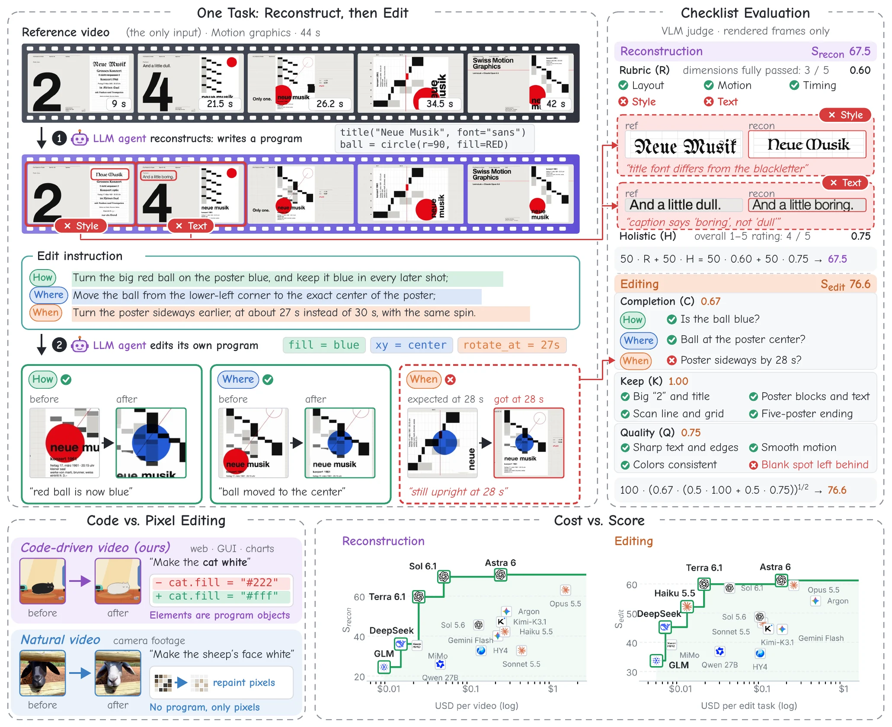

Benchmark · Code-based video reconstruction & editing
1HKUST MMLab 2Beihang University 3Tsinghua University 4Peking University
†Project leader · *Corresponding author
One task, two stages
The model sees only a reference video. It writes a program (HTML, SVG, Canvas or Three.js) that renders the same motion graphics, then receives a natural-language instruction and must edit its own program. A judge checks rendered frames against fixed checklists.
Abstract
Large language models increasingly create visual content by writing code, and motion-graphics videos are a natural target: many are already produced as programs in HTML, SVG, Canvas, or Three.js. Code makes a video editable, yet no benchmark tests whether a model can recreate a video from pixels alone and then edit its own program on request. We introduce ReelCodeBench, a benchmark for code-based video reconstruction and editing. Given only a reference video, a model writes a program that reproduces it, and then edits that program following a natural-language instruction. ReelCodeBench contains 420 videos, ranging from few-second motion clips to three-minute explainer animations across six content types and six visual forms, each paired with an editing task, for 844 edit requirements organized into a Where / When / How taxonomy of spatial, temporal, and appearance edits. Since edited videos have no ground truth, we score each task with a rubric answered by a vision-language model from rendered frames: completion questions for each change inside its time window, keep items for content that must stay unchanged, and an overall quality rating. This separates missed edits, wrong edits, and collateral damage. Evaluating sixteen code-generating models and two diffusion video generation models, we find that reconstruction errors carry into editing, that motion and timing are the main bottleneck in both stages, and that even the best editor keeps only about 60% of what it should.
Benchmark

Position, size, crop and layout of one element inside one time window.
301 requirementsAppearance time, entrances and exits, motion paths, transitions and trimming.
311 requirementsText, typography, color and visual effects.
232 requirements
Results · Stage 1
Each tile is rendered from code that a model wrote after watching only the reference. Videos play in sync; pick a case below.
Results · Stage 2
The same model edits its own reconstruction. Compare its video before and after the edit, and switch between models.
Leaderboard
Findings
A model edits its own program, so an element that is missing or badly structured after reconstruction is also hard to edit later.
Across models, the Motion and Timing rubric dimensions and the When edits score lowest, in both stages.
The best editor, GPT-6 Astra, completes 72% of requested changes but keeps only about 61% of what should stay unchanged.

Citation
@article{kwan2026reelcodebench,
title = {ReelCodeBench: Can Frontier LLMs Edit What They Rebuild?},
author = {Kwan, Hohin and Li, Hongyu and Yu, Hao and Tsai, Chi Hsu and
Yang, Pei and Chen, Houyuan and Liu, Si and Rao, Anyi},
journal = {arXiv preprint arXiv:XXXX.XXXXX},
year = {2026}
}